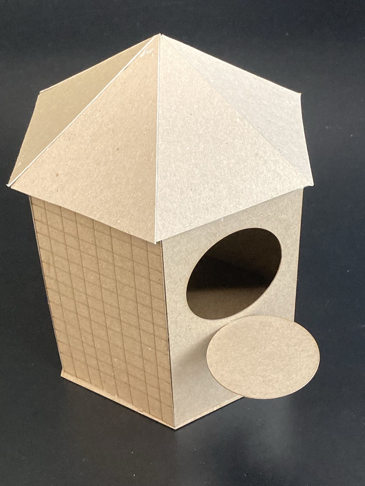
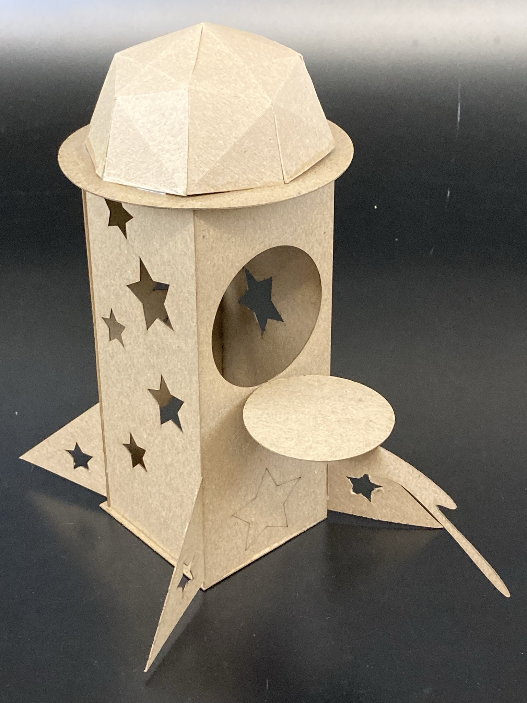
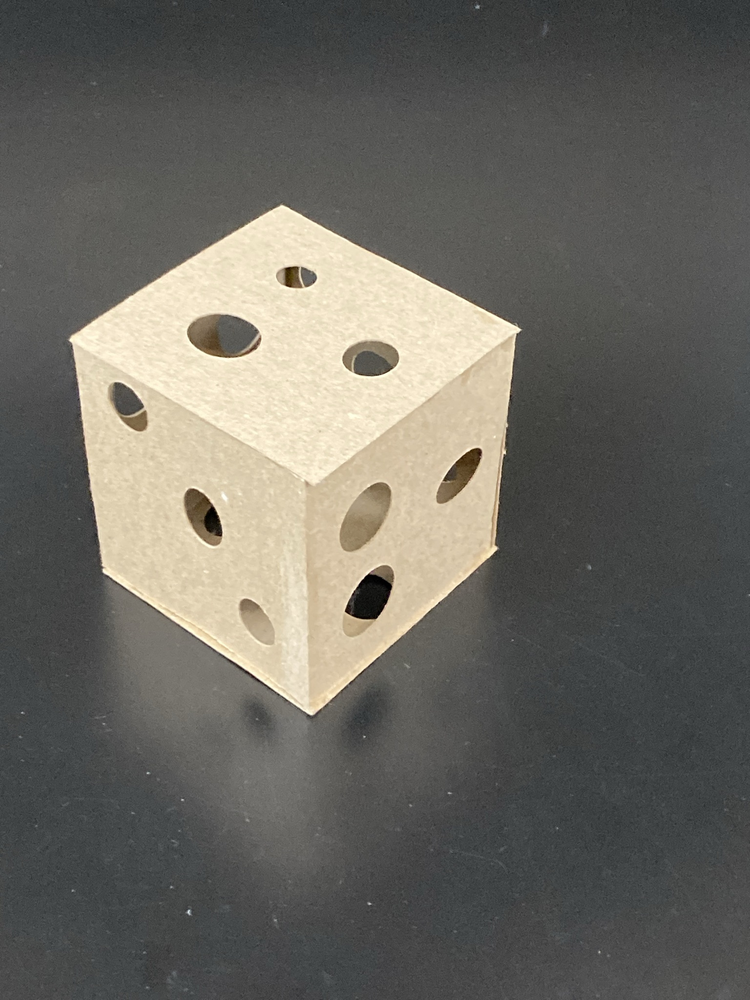
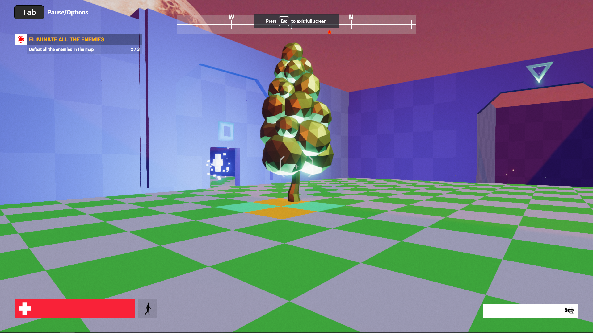

Portfolio of Danny Fonseca
Welcome to my Portfolio! This show my greatest work in my college life. This contain some Previous Class I took including Art, Coding, etc.
- HTML
- CSS
- JavaScript
- PHP
- MySQL
- React
Sites
I have set my coding skills in different profiles in my previous class.
Site 1: HTML Source
Site 2: More including JS, CSS, React
Fimga
McD Mobile Redesign

First App Redesign in Mobile Development from Figma
Drawing & 3-D Model



These first 3 Three Dimension Model was made in my first year in UCF after finishing Seminole State College in May 2021.

